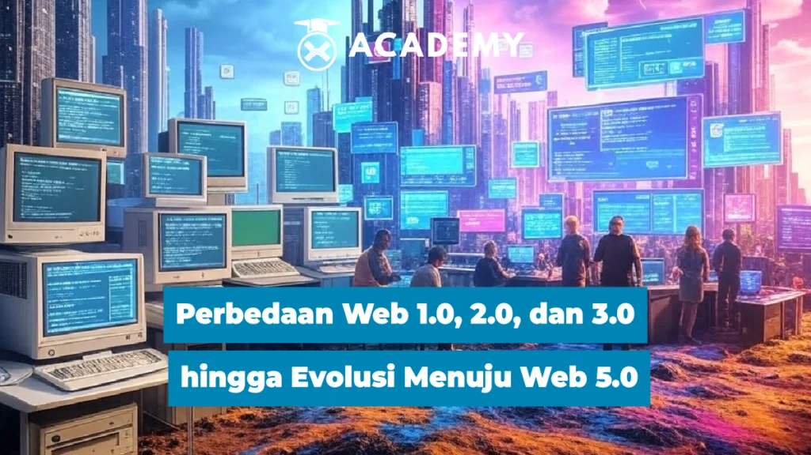

Perbedaan Web 1.0, 2.0, dan 3.0 hingga Evolusi Menuju Web 5.0
11/03/2025 Tutorial
Internet telah mengalami perkembangan pesat sejak awal kemunculannya. Dari Web 1.0 hingga Web 3.0, setiap fase membawa perubahan signifikan dalam cara pengguna berinteraksi dengan web. Kini, muncul konsep Web 5.0 yang menjanjikan revolusi baru dengan integrasi teknologi canggih.
Perbedaan Web 1.0, 2.0, dan 3.0
Web 1.0: Era Statis
Web 1.0 adalah generasi pertama internet yang muncul pada 1990-an. Ciri khasnya adalah halaman web statis yang hanya menampilkan informasi tanpa interaksi pengguna. Konten hanya dapat dibaca tanpa bisa diubah atau dikomentari oleh pengguna. Beberapa karakteristik utama Web 1.0 meliputi:
- Halaman web bersifat statis dan hanya dapat diakses tanpa interaksi
- Minimnya media sosial dan komunitas online
- Sumber daya utama berupa teks dan gambar sederhana
Web 2.0: Era Interaksi dan Media Sosial
Web 2.0 muncul pada awal 2000-an dengan peningkatan interaktivitas dan keterlibatan pengguna. Situs seperti Facebook, YouTube, dan Wikipedia memungkinkan pengguna untuk membuat dan berbagi konten. Beberapa ciri utama Web 2.0 meliputi:
- Pengguna dapat berkontribusi dengan membuat konten, komentar, dan berbagi
- Media sosial menjadi platform utama untuk interaksi
- Penggunaan teknologi AJAX untuk pengalaman pengguna yang lebih dinamis
orang juga baca ini Perbedaan Web 2.0 dan 3.0 & Keunggulannya
Perbedaan Web 2.0 dan 3.0 & Keunggulannya
Web 3.0 menandai peralihan ke internet yang lebih cerdas dan terdesentralisasi. Teknologi blockchain, kecerdasan buatan (AI), dan kontrak pintar memainkan peran utama dalam evolusi ini. Fitur utama Web 3.0 meliputi:
- Desentralisasi melalui blockchain
- Penggunaan AI untuk memahami data secara kontekstual
- Privasi dan keamanan yang lebih baik bagi pengguna
web 4.0
pasti mempunyai sebuah rutinitas. Apapun bentuk rutinitasnya , seluruh rutinitas tersebut bisa diketahui oleh aplikasi komputer/program/tools/device yang kita miliki yang dijalankan secara online. Jadi kemanapun seseorang pergi, dan apapun yang dilakukan semuanya direcord oleh alat-alat tersebut yang nantinya akan digunakan jika ingin mengetahui informasi apa yang dibutuhkan, bahkan teknologi ini bisa mengingatkan, menginterupsi dan memberikan informasi manakala ada perubahan dari sebuah sechedule/rutinitas, yang membantu melakukan pencarian. Inti dari Web 4.0. Dapat mengetahui apa saja yang kita lakukan, dan juga bisa membantu dalam melakukan sebuah pencarian informasi dan menyimpan histori pencarian, bahkan mempertemukan orang-orang yang mencari informasi yang sama. Menurut Seth Godin dalam blognya, syarat utama.
teknologi Web 4.0 :
- Komunikasi yang lebih baik: Web 4.0 memungkinkan komunikasi yang lebih baik antara manusia dan mesin, serta antar mesin itu sendiri.
- Interaksi yang lebih cerdas: Teknologi ini memungkinkan interaksi yang lebih cerdas antara pengguna dan aplikasi, dengan memahami konteks dan preferensi pengguna.
- Penggunaan data yang lebih efisien: Web 4.0 memanfaatkan data besar (big data) untuk memberikan pengalaman yang lebih personal dan relevan bagi pengguna.
Konsep Web 5.0 dan Revolusi Internet
Web 5.0 merupakan konsep lanjutan yang menggabungkan keunggulan Web 3.0 dengan kecerdasan emosional AI dan Internet of Things (IoT). Tujuan utamanya adalah menciptakan internet yang lebih human-centric, di mana teknologi memahami dan merespons emosi manusia dengan lebih baik.
Konsep Web 5.0 dipopulerkan oleh Jack Dorsey, pendiri Twitter, yang menekankan pentingnya internet yang lebih pribadi, aman, dan terdesentralisasi. Beberapa fitur utama Web 5.0 meliputi:
- Integrasi AI yang lebih cerdas: AI dalam Web 5.0 tidak hanya memahami data tetapi juga emosi pengguna.
- Konektivitas IoT yang lebih luas: Semua perangkat dapat terhubung untuk memberikan pengalaman yang lebih seamless.
- Keamanan data yang lebih tinggi: Web 5.0 bertujuan untuk memberikan kontrol penuh kepada pengguna atas data pribadi mereka.
orang juga baca ini: Apa Itu Internet of Things? Bongkar Cara Kerja & Manfaatnya
Fitur Utama Web 5.0
1. Kecerdasan Buatan (AI) yang Lebih Lanjut
AI di Web 5.0 akan memahami tidak hanya teks dan gambar tetapi juga ekspresi emosi pengguna. Teknologi ini akan diterapkan dalam berbagai sektor seperti layanan pelanggan, pendidikan, dan hiburan.
2. Integrasi IoT (Internet of Things)
Perangkat yang terhubung dalam ekosistem IoT akan lebih cerdas dan responsif terhadap kebutuhan pengguna. Misalnya, rumah pintar yang bisa menyesuaikan suhu dan pencahayaan berdasarkan suasana hati penghuni.
3. Blockchain dan Desentralisasi
Keamanan dan transparansi data semakin diperkuat dengan teknologi blockchain, di mana pengguna memiliki kontrol penuh terhadap informasi mereka.
Manfaat Web 5.0 bagi Pengguna dan Industri
1. Pengalaman Digital yang Lebih Personal
Dengan AI yang memahami emosi, pengguna akan mendapatkan pengalaman digital yang lebih personal dan responsif sesuai kebutuhan mereka.
2. Privasi dan Keamanan Data yang Lebih Baik
Web 5.0 memberikan pengguna kendali penuh atas data pribadi mereka, mengurangi risiko pelanggaran privasi yang sering terjadi di Web 2.0.
3. Efisiensi dalam Berbagai Sektor
Dunia bisnis, kesehatan, dan pendidikan akan mendapatkan manfaat dari Web 5.0. Misalnya, AI dapat membantu dalam diagnosis medis berdasarkan emosi pasien atau menyederhanakan proses bisnis melalui otomatisasi yang lebih canggih.
orang juga baca ini: AI Crypto 2025: 7 Proyek yang Bisa Mendominasi Pasar
Proyek Terkait Web 5.0
Beberapa perusahaan dan teknologi sedang mengarah pada pengembangan Web 5.0, antara lain:
- Bluesky: Proyek media sosial desentralisasi yang didukung oleh Jack Dorsey.
- SingularityNET: Platform AI berbasis blockchain untuk menciptakan sistem AI yang lebih cerdas dan terdesentralisasi.
- Neuralink: Perusahaan yang mengembangkan antarmuka otak-komputer, memungkinkan komunikasi langsung antara manusia dan teknologi.
Tantangan dan Isu yang Dihadapi
1. Privasi dan Keamanan Data
Meskipun Web 5.0 berfokus pada privasi, tantangan terbesar tetap ada pada perlindungan data pribadi dan ancaman peretasan.
2. Adopsi Massal
Teknologi baru membutuhkan waktu untuk diterima oleh masyarakat luas. Banyak bisnis dan pengguna yang masih bergantung pada Web 2.0 dan belum siap untuk transisi ke Web 5.0.
3. Regulasi dan Kebijakan
Pemerintah di berbagai negara masih mencari cara untuk mengatur blockchain, AI, dan teknologi desentralisasi agar tetap aman dan tidak disalahgunakan.
Kesimpulan
Web 5.0 adalah langkah besar berikutnya dalam evolusi internet, yang menggabungkan AI, IoT, dan blockchain untuk menciptakan pengalaman digital yang lebih personal dan aman. Meskipun memiliki potensi besar, tantangan seperti privasi, regulasi, dan adopsi masih perlu diatasi sebelum Web 5.0 dapat diterapkan secara luas.
Nah, itulah pembahasan menarik tentang Web 5.0 yang bisa kamu baca selengkapnya hanya di Akademi Crypto. Tidak hanya menambah wawasan tentang investasi, di sini kamu juga dapat menemukan berita crypto terkini seputar dunia blockchain dan kripto.
Selain itu, temukan informasi terkini lainnya yang dikemas dalam kumpulan artikel crypto terlengkap dari Indodax Academy. Jangan lewatkan kesempatan untuk memperluas pengetahuanmu di dunia investasi dan teknologi digital!
FAQ
- Apa perbedaan utama antara Web 1.0, 2.0, dan 3.0?
Web 1.0 bersifat statis, Web 2.0 memungkinkan interaksi pengguna, dan Web 3.0 mengedepankan desentralisasi serta AI. - Apa yang membuat Web 5.0 berbeda dari Web 3.0?
Web 5.0 lebih fokus pada pengalaman berbasis emosi dengan AI yang lebih canggih dan integrasi IoT. - Apakah Web 5.0 sudah tersedia?
Saat ini, Web 5.0 masih dalam tahap konsep dan pengembangan dengan berbagai proyek yang mengarah ke sana. - Bagaimana Web 5.0 akan memengaruhi keamanan data?
Web 5.0 bertujuan untuk meningkatkan keamanan data dengan teknologi blockchain dan enkripsi yang lebih kuat. - Apa tantangan terbesar dalam mengadopsi Web 5.0?Tantangan utama meliputi privasi, regulasi, serta kesiapan teknologi dan masyarakat untuk beralih ke ekosistem baru.